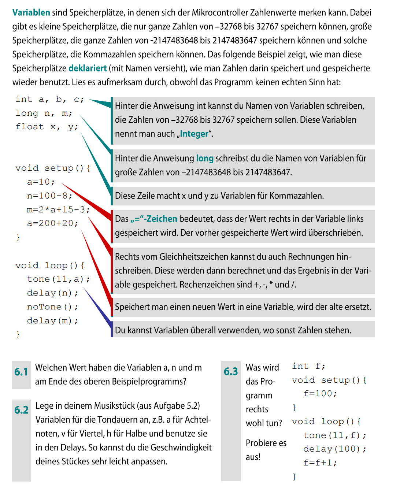
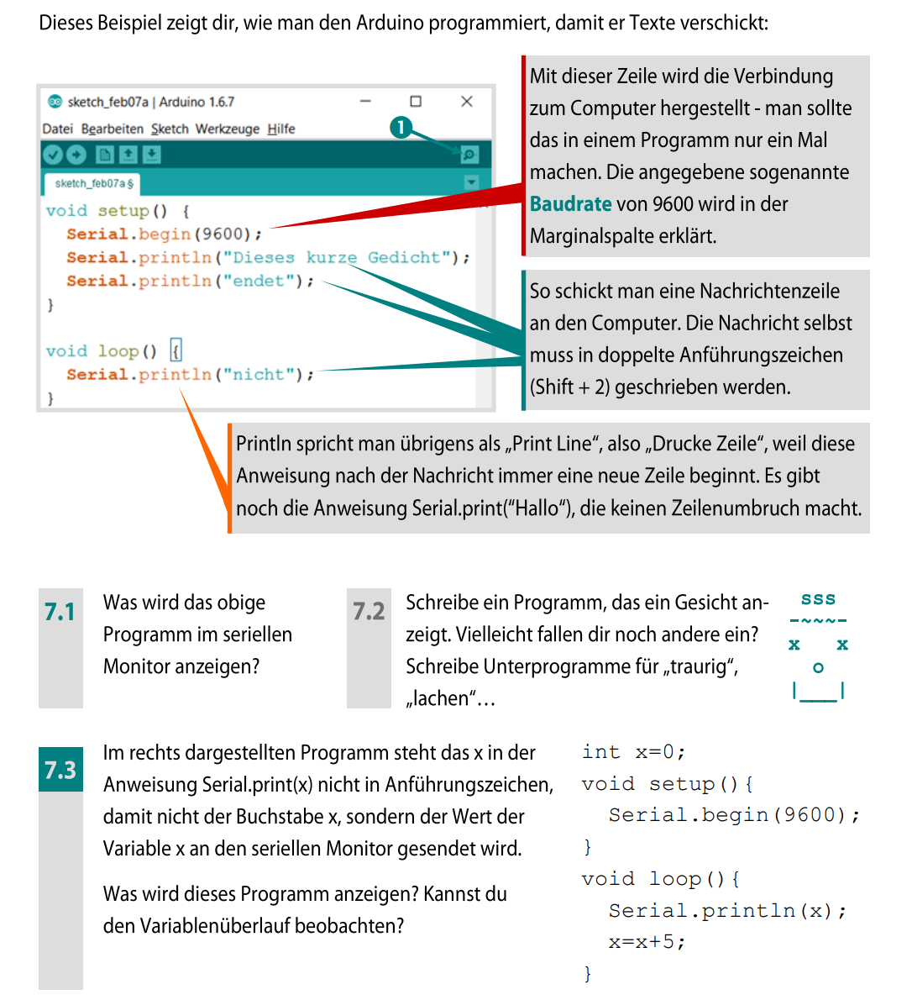
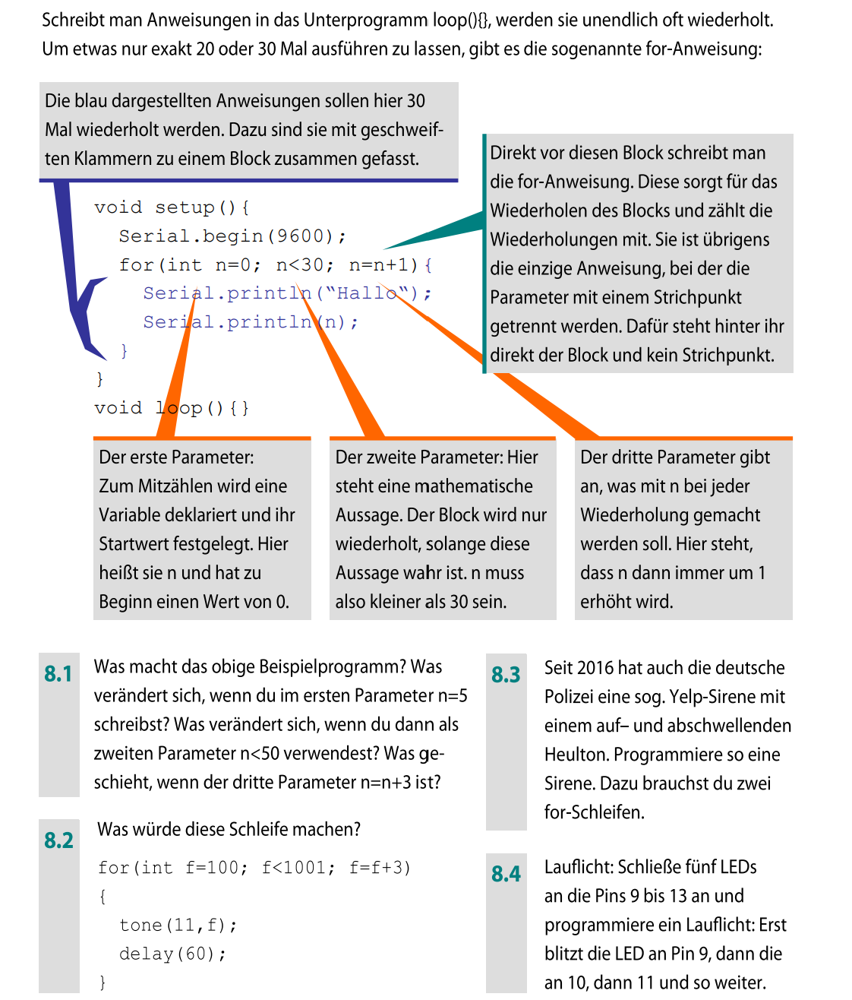
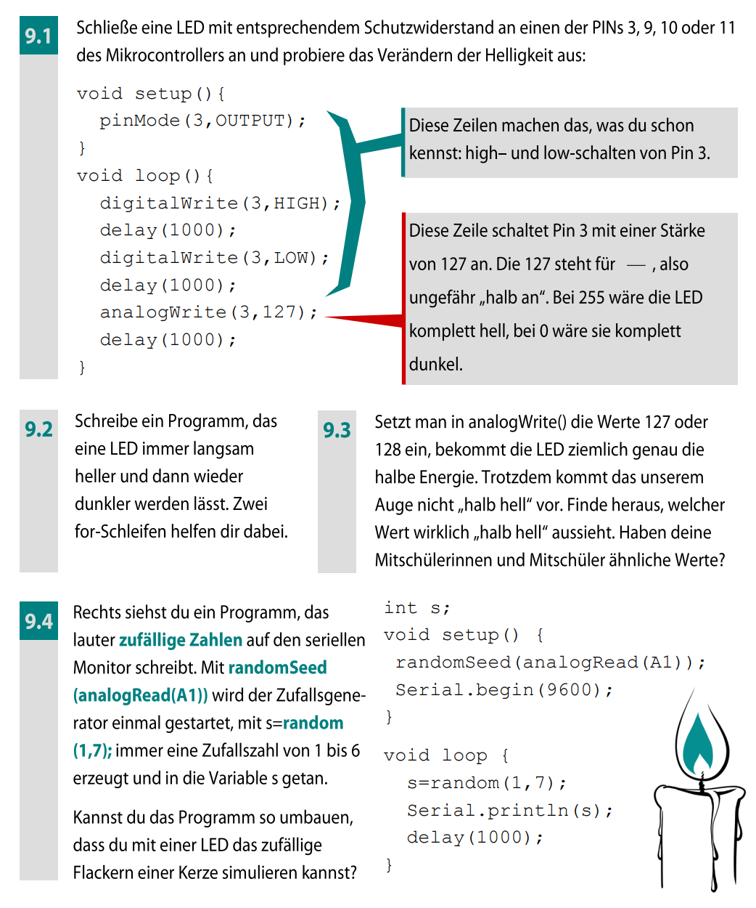
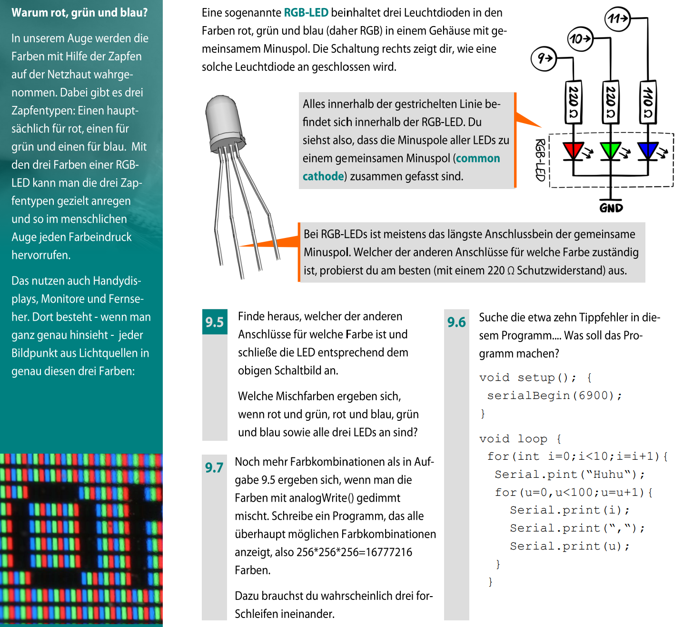
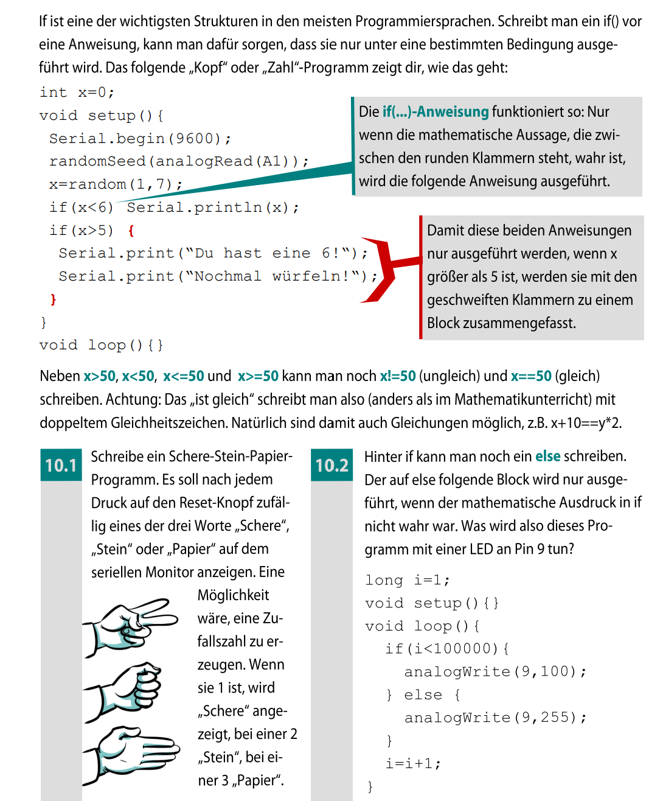

Ab jetzt beobachtest du nicht nur, was der Arduino ausgibt. Du verfolgst auch seine inneren Zustände: Welche Werte liegen im Speicher, welche Prüfung ist wahr und welcher Befehl läuft als Nächstes?
Leitfrage: Wie steuerst du mit gespeicherten Werten, Wiederholungen und Entscheidungen gezielt Licht und Ton? Du sagst zuerst das Verhalten voraus, lädst den Sketch hoch und vergleichst deine Beobachtung mit der Vorhersage.
setup() und ein loop().Verwende wie in Modul 2 einen kleinen passiven Lautsprecher oder einen passiven Piezo-Schallwandler. Prüfe das Bauteil vor dem Anschluss anhand der Set-Unterlagen, des Datenblatts oder gemeinsam mit deiner Lehrkraft. Ein unbeschriftetes Teil wird nicht probeweise direkt am Pin angeschlossen; ein aktiver Summer mit eigener Tonerzeugung eignet sich nicht für die Tonhöhenversuche.
Trenne USB und verbinde D11 → 330-Ω-Serienwiderstand → Lautsprecheranschluss 1; Anschluss 2 → GND. Bei einem gepolten Piezo liegt + auf der Pinseite und − an GND. Auch ein niederohmiger kleiner passiver Lautsprecher wird hier nur mit diesem Serienwiderstand leise betrieben; der Widerstand begrenzt den Pin-Strom. Mit 1 kΩ in Reihe wird er noch leiser. Für höhere Lautstärke brauchst du eine geeignete Treiberstufe. Halte den Schallwandler beim Test vom Ohr fern und entferne den Tonaufbau später vor Lauflicht und LED-Versuchen.
int – beim Uno R3 ganze Zahlen von −32768 bis 32767long – ganze Zahlen von −2147483648 bis 2147483647float – Kommazahlen (z. B. 2.5)int a;a = 10;a = a + 5;int a; hat dort ohne Initialisierung keinen bestimmten Anfangswert. Eine globale Variable außerhalb der Funktionen würde dagegen vor setup() mit 0 initialisiert. Setze beim Programmieren den gewünschten Startwert ausdrücklich.

Notiere neben jeder Zuweisung den Wert, der danach in der Variable steht. Lies dabei immer zuerst die rechte Seite.
Denkfehler: a = a + 1 ist keine mathematische Gleichung, sondern eine Aktualisierung des gespeicherten Werts.
Nutze den Tonaufbau an D11. Berechne nach jeder Zeile in setup() die aktuellen Werte von a, n und m. Notiere dann Tonhöhe, Tondauer und Pause eines Durchlaufs. Erkläre, ob die letzte Änderung von a auch m verändert.
int a;
long n, m;
void setup() {
a = 10;
n = 100 - 8;
m = 2 * a + 15 - 3;
a = 200 + 20;
}
void loop() {
tone(11, a);
delay(n);
noTone(11);
delay(m);
}Teste: Lade hoch und höre kurz zu. Verdopple anschließend nur n. Sage vor dem Upload voraus, was sich zeitlich ändert und was gleich bleibt. Im Material fehlt bei noTone() der Pin; die Vorlage korrigiert das.
Öffne eine Kopie deines Musikstücks aus Aufgabe 5.2. Lege vor setup() drei Variablen int a = 125;, int v = 250;, int h = 500; für Achtel-, Viertel- und halbe Noten an. Ersetze die passenden Zahlen in den delay()-Befehlen durch diese Namen. Wenn du den Sketch nicht zur Hand hast, beginne mit dieser spielbaren Kurzfolge und erweitere sie um weitere Noten:
int a = 125;
int v = 250;
int h = 500;
void setup() {}
void loop() {
tone(11, 262); delay(a); noTone(11); delay(30);
tone(11, 294); delay(v); noTone(11); delay(30);
tone(11, 330); delay(h); noTone(11); delay(1000);
}Teste: Verdopple alle drei Notenlängen und lade erneut hoch. Vergleiche Tempo und Tonhöhe. Begründe, weshalb du für ein einheitlich schnelleres Stück auch die fest eingetragenen Pausen proportional ändern müsstest.
int f;
void setup() { f = 100; }
void loop() {
tone(11, f);
delay(100);
f = f + 1;
}Notiere die ersten fünf Frequenzwerte. Lade den Sketch am Tonaufbau hoch, höre etwa zehn Sekunden zu und trenne dann USB. Erkläre, welche Zeile die Frequenz ändert und weshalb der Ton zwischen den Änderungen nicht verstummt. Stopp & check: Ein int wächst nicht unbegrenzt. Beschreibe für einen späteren Umbau mit if, wie du oberhalb von 1000 Hz wieder bei 100 Hz beginnen würdest.
Jetzt hast du das gelernt: Eine Zuweisung speichert das gerade berechnete Ergebnis. Spätere Änderungen anderer Variablen berechnen alte Ergebnisse nicht automatisch neu.
int t = 500;
void setup() { pinMode(13, OUTPUT); }
void loop() {
digitalWrite(13, HIGH);
delay(t);
digitalWrite(13, LOW);
delay(t);
}delay()-Zeilen zu verändern.
Vergleiche jeweils fünf vollständige Hell-Dunkel-Zyklen. Notiere die rechnerische Dauer eines Zyklus vor und nach der Änderung.
t bestimmt.
int t = 250;
int ton = 262;
void setup() {}
void loop() {
tone(11, ton);
delay(300);
noTone(11);
delay(300);
}loop() dafür, dass der Ton bei jedem Durchlauf um 20 Hz höher wird.
ton bestimmt.
ton = ton + 20;
int kurz = 150;
int lang = 400;
void setup() {}
void loop() {
tone(11, 330);
delay(kurz);
noTone(11);
delay(lang);
}delay()-Zeilen hinzuzufügen.
Teste mindestens zwei Wertepaare. Unterscheide dabei die gesamte Periodendauer kurz + lang und den Anteil, während dessen der Ton erklingt.
kurz und lang verändert.
Serial.begin(9600);Serial.println() gibt der Arduino einen Wert
oder Text aus und beginnt danach eine neue Zeile.
Serial.println(x);x
im Laufe des Programms ändert.

Finde Initialisierung und Ausgabe. Prüfe, ob die Baudrate im Sketch und im seriellen Monitor übereinstimmt.
Debugging-Auftrag: Ergänze in deinem LED-Sketch aus Challenge 1 eine Ausgabe beim Start und je eine vor HIGH und LOW. Nutze Serial.begin(9600) in setup(). Vergleiche die Zeitpunkte im Monitor mit der LED.
Für diese Aufgabe reicht das Board am USB-Kabel. Lade den folgenden Sketch hoch. Öffne in der IDE Werkzeuge → Serieller Monitor und stelle 9600 Baud ein. Drücke danach kurz Reset, damit du die einmaligen Startzeilen sicher siehst. Notiere zuerst deine erwarteten ersten sechs Zeilen, dann die tatsächliche Ausgabe.
void setup() {
Serial.begin(9600);
Serial.println("Dieses kurze Gedicht");
Serial.println("endet");
}
void loop() {
Serial.println("nicht");
delay(500);
}Ersetze nur das letzte println durch print. Lade erneut hoch und erkläre den Unterschied. Die zusätzliche Wartezeit macht die Wiederholung lesbar; im Material läuft sie ohne Pause.
Schreibe zwei Funktionen traurig() und lachend(), die jeweils ein mehrzeiliges Gesicht mit Serial.println("..."); ausgeben. Ergänze die Vorlage, lade hoch und drücke bei geöffnetem Monitor Reset. Beide Gesichter sollen genau einmal erscheinen; loop() bleibt leer. Rufe danach eine Funktion zweimal auf: Warum musst du dafür die einzelnen Ausgabezeilen nicht kopieren?
void traurig() {
Serial.println(":(");
}
void lachend() {
Serial.println(":)");
}
void setup() {
Serial.begin(9600);
traurig();
Serial.println();
lachend();
}
void loop() {}int x = 0;
void setup() { Serial.begin(9600); }
void loop() {
Serial.println(x);
x = x + 5;
delay(100);
}Serial.println(x) mit Serial.println("x"). Für den Überlaufversuch setzt du den Startwert auf 32750 und die Pause auf 1000 ms. Notiere die letzten gültigen positiven Werte und, was dein konkretes Board danach tatsächlich ausgibt. Ein vorzeichenbehafteter Überlauf ist keine verlässliche Rechenregel. Stelle den Startwert anschließend wieder auf 0 und ergänze nach dem Kapitel zu if eine Grenzprüfung vor der Addition. Nur long zu wählen vergrößert den Bereich, verhindert aber keinen späteren Überlauf.
Jetzt hast du das gelernt: print() setzt die Ausgabe in derselben Zeile fort, println() hängt einen Zeilenumbruch an. Der Monitor zeigt dir gespeicherte Werte, wenn du den Variablennamen ohne Anführungszeichen ausgibst.
Serial.begin(9600))
muss mit der Baudrate im seriellen Monitor übereinstimmen.
Serial.begin() vorhanden?expected, not declared,
before.
int x = 0;
void setup() { Serial.begin(9600); }
void loop() {
Serial.println(x);
delay(500);
}0.
x wird nie verändert.
Es fehlt z. B.:
x = x + 1;
void setup() {
pinMode(13, OUTPUT);
}
void loop() {
digitalWrite(12, HIGH);
}for (int i = 0; i < 5; i++) {
// Code
}int i = 0i < 5i++ (i wird um 1 erhöht)
Trage danach die einzelnen Durchgänge in die Ablaufspur ein.
void setup() {
pinMode(13, OUTPUT);
for (int i = 0; i < 5; i++) {
digitalWrite(13, HIGH);
delay(300);
digitalWrite(13, LOW);
delay(300);
}
}
void loop() {}setup(); innerhalb von loop() würden die Fünfergruppen immer wieder starten.
for (int i = 0; i < 5; i++) startet i bei 0.
Vor jedem Durchgang wird geprüft, ob i < 5 noch wahr ist.
Erst nach dem Block wird i um 1 erhöht.
void setup() {
for (int i = 0; i < 3; i++) {
tone(11, 262);
delay(200);
noTone(11);
delay(200);
}
}
void loop() {}Nutze nur das USB-Board und den Monitor mit 9600 Baud. Bestimme vor jedem Upload ersten Wert, letzten Wert und Anzahl der Durchläufe. Drücke bei geöffnetem Monitor Reset und prüfe deine Vorhersage. Ändere nacheinander: Start 0 → 5; dann Grenze 30 → 50; schließlich Schritt n = n + 1 → n = n + 3. Behalte jeweils die vorigen Änderungen bei.
void setup() {
Serial.begin(9600);
for (int n = 0; n < 30; n = n + 1) {
Serial.println("Hallo");
Serial.println(n);
}
}
void loop() {}Erkläre, weshalb bei n < 50 die Zahl 50 nicht ausgegeben wird und warum der letzte Wert bei Schritten von 3 trotzdem nicht 49 sein muss.
Baue den Tonaufbau an D11 auf. Bestimme erste und letzte Frequenz, Schrittweite und Anzahl der Tonstufen. Berechne die Summe der Wartezeiten. Lade hoch und höre zu: Was passiert nach dem letzten Schleifendurchlauf?
void setup() {
for (int f = 100; f < 1001; f = f + 3) {
tone(11, f);
delay(60);
}
}
void loop() {}Ergänze anschließend noTone(11); direkt nach der Schleife in setup(). Teste erneut und erkläre den Unterschied. Trenne USB nach dem Versuch.
Programmiere am selben Tonaufbau eine wiederholte Folge von 100 bis 1000 Hz und zurück. Übernimm die Schleife aus 8.2 in loop(), ändere die Wartezeit auf 5 ms und ergänze danach eine zweite Schleife mit Start 1000, Bedingung f >= 100 und Schritt f = f - 3. setup() bleibt leer. Du kannst dieses lauffähige Grundgerüst erweitern:
void setup() {}
void loop() {
for (int f = 100; f <= 1000; f += 3) {
tone(11, f);
delay(5);
}
// Fuege hier die absteigende Schleife ein.
}Teste: Höre nur wenige Zyklen. Vergleiche danach 5 ms und 10 ms je Stufe. Begründe, ob sich die Frequenzgrenzen oder nur die Geschwindigkeit des Auf- und Abschwellens ändern.
Trenne USB und entferne den Tonaufbau. Du brauchst fünf LEDs und fünf Widerstände mit je 330 Ω. Verbinde für jeden Pin D9, D10, D11, D12 und D13 einen eigenen Zweig: Pin → Widerstand → LED-Anode; LED-Kathode → GND. Die Kathode ist bei ungekürzten LEDs meist das kürzere Bein; beachte auch die flache Gehäuseseite. Stecke Anode und Kathode in getrennte Kontaktreihen. Verbinde die benutzte GND-Schiene mit GND des Boards.
void setup() {
for (int pin = 9; pin <= 13; pin++) {
pinMode(pin, OUTPUT);
}
}
void loop() {
for (int pin = 9; pin <= 13; pin++) {
digitalWrite(pin, HIGH);
delay(200);
digitalWrite(pin, LOW);
}
}Prüfe: Nach dem Upload leuchtet jeweils nur eine externe LED, von D9 bis D13, dann wieder D9. Die eingebaute LED L kann bei D13 mit aufleuchten. Verändere die zweite Schleife so, dass das Licht zurückläuft. Notiere Start, Bedingung und Schritt und teste. Falls eine LED fehlt: Trenne USB, kontrolliere Polung, Kontaktreihe und den zugehörigen Pin.
Jetzt hast du das gelernt: Startwert, Bedingung und Schritt bestimmen die Wertefolge. Ob eine abgeschlossene Folge erneut startet, hängt davon ab, ob sie in setup() oder loop() steht.
for (int i = 0; i < 3; i++) {
for (int j = 0; j < 5; j++) {
// Code
}
}void setup() {
pinMode(13, OUTPUT);
for (int r = 0; r < 3; r++) {
for (int i = 0; i < 4; i++) {
digitalWrite(13, HIGH);
delay(200);
digitalWrite(13, LOW);
delay(200);
}
delay(1000);
}
}
void loop() {}void setup() {
for (int a = 0; a < 2; a++) {
for (int b = 0; b < 3; b++) {
tone(11, 440);
delay(100);
noTone(11);
delay(100);
}
delay(800);
}
}
void loop() {}Trenne USB und entferne Lauflicht und Tonaufbau. Verbinde D3 → 330 Ω → LED-Anode; LED-Kathode → GND. Die eingebaute LED an D13 eignet sich beim Uno R3 nicht für diesen PWM-Versuch. Lade für jeden Versuch einen eigenen LED-Sketch hoch: tone() benutzt beim Uno R3 denselben Timer wie PWM an D3/D11 und darf in diesen Versuchen nicht gleichzeitig laufen.
HIGH = an, LOW = aus.
analogWrite(pin, wert);void setup() {
pinMode(3, OUTPUT);
}
void loop() {
analogWrite(3, 127);
delay(1000);
}analogWrite() funktioniert nur an
PWM-Pins (z. B. 3, 5, 6, 9, 10, 11 beim Arduino Uno).

Die LED erhält nicht einfach eine kleinere konstante Spannung. Sie wird sehr schnell ein- und ausgeschaltet. Der PWM-Wert bestimmt den Anteil der Einschaltzeit.
Vergleich: Skizziere qualitativ die Signale für 64, 128 und 230.
int hell = 50;
void setup() {
pinMode(3, OUTPUT);
}
void loop() {
analogWrite(3, hell);
delay(1000);
}hell veränderst.
hell bestimmt die Helligkeit
der LED. Je größer der Wert, desto heller leuchtet die LED.
Der Ablauf des Programms bleibt gleich – nur die Variable
verändert das Verhalten.
Nutze die externe LED mit 330 Ω an D3. Sage die drei Zustände in ihrer Reihenfolge voraus, lade hoch und beobachte mindestens zwei vollständige Durchläufe.
void setup() { pinMode(3, OUTPUT); }
void loop() {
digitalWrite(3, HIGH); delay(1000);
digitalWrite(3, LOW); delay(1000);
analogWrite(3, 127); delay(1000);
}Skizziere LOW und HIGH und daneben PWM mit den Werten 64, 128 und 255 über denselben Zeitraum. Markiere die unterschiedlichen Einschaltanteile; stelle PWM nicht als kleinere konstante Spannung dar.
Erweitere diese lauffähige Vorlage nach der steigenden Schleife um eine fallende Schleife: Startwert 255, Bedingung hell >= 0, Schritt hell--. Übernimm die beiden Zeilen des Schleifenrumpfs. Lade hoch: Die LED soll heller und anschließend dunkler werden. Vergleiche danach 10 ms und 20 ms Wartezeit; erkläre die Wirkung auf den gesamten Zyklus.
void setup() { pinMode(3, OUTPUT); }
void loop() {
for (int hell = 0; hell <= 255; hell++) {
analogWrite(3, hell);
delay(10);
}
// Fuege hier die fallende Schleife ein.
}Verwende den Sketch der Mini-Challenge mit int hell = 50;. Teste zuerst hell = 255 als Referenz. Suche danach durch erneute Uploads einen Wert, der dir unter gleichen Lichtbedingungen und aus gleichem Blickwinkel ungefähr halb so hell erscheint. Vergleiche auch ausdrücklich mit 128. Notiere deinen eigenen Wert, die Bedingungen und Unterschiede zu einer anderen Person. Es gibt keinen universellen richtigen Messwert: Halbe Einschaltdauer und halber subjektiver Helligkeitseindruck sind unterschiedliche Aussagen.
Lade zunächst diesen Zahlen-Sketch hoch und öffne den Monitor bei 9600 Baud. A1 bleibt unbeschaltet; sein gelesener Wert dient als Startwert für eine Pseudozufallsfolge. Notiere die möglichen Ausgaben von random(1, 7). Die obere Grenze wird nicht erreicht.
void setup() {
Serial.begin(9600);
randomSeed(analogRead(A1));
}
void loop() {
int s = random(1, 7);
Serial.println(s);
delay(1000);
}Ergänze pinMode(3, OUTPUT); in setup(). Ersetze die Zahlenwahl durch int s = random(40, 220);, ergänze analogWrite(3, s); und ersetze die feste Pause durch delay(random(30, 150));. Lade hoch und vergleiche mit gleichmäßigem Blinken. Begründe, warum sowohl Helligkeit als auch Dauer variiert werden.
Jetzt hast du das gelernt: PWM verändert die Einschaltdauer. Dein Auge reagiert nicht proportional auf den Zahlenwert; unterscheide elektrische Einstellung und beobachteten Helligkeitseindruck.

Ordne jedem Anschluss einen Farbkanal zu und lies die drei PWM-Werte als Farbrezept.
Vorhersage: Welche Mischfarbe erwartest du bei viel Rot und Grün, aber keinem Blau?
Du brauchst eine gewöhnliche vierbeinige RGB-LED mit gemeinsamer Kathode und drei 330-Ω-Widerstände. Trenne USB. Prüfe Typ und Anschlussbelegung anhand der Bauteilbeschriftung oder des Datenblatts aus deinem Set; die Beinlänge allein ist kein sicherer Nachweis. Verbinde gemeinsame Kathode → GND, D3 → 330 Ω → Rot, D5 → 330 Ω → Grün, D6 → 330 Ω → Blau. Jeder Farbzweig bekommt einen eigenen Widerstand. Verwende keine adressierbare LED wie WS2812 mit dieser Schaltung.
Die Mini-Challenge unten ist zugleich dein vollständiger Testsketch. Lade erst r=255, g=0, b=0 hoch, danach nur Grün und nur Blau. Notiere die tatsächliche Farbe und korrigiere bei vertauschten Kanälen die Verkabelung bei abgezogenem USB. Dieser Kurs verwendet D3/D5/D6 einheitlich; bei Übernahme des Materialplans müsstest du alle Pinangaben auf D9/D10/D11 umstellen. Lass tone() in diesen RGB-Sketchen weg.
analogWrite() gesteuert:
analogWrite(rotPin, 255);
analogWrite(gruenPin, 0);
analogWrite(blauPin, 0);255 - farbwert invertiert. Kläre den Typ vor dem Anschluss und passe alle drei Kanäle einschließlich des Ausschaltzustands an.
int r = 255;
int g = 0;
int b = 0;
void setup() {
pinMode(3, OUTPUT);
pinMode(5, OUTPUT);
pinMode(6, OUTPUT);
}
void loop() {
analogWrite(3, r);
analogWrite(5, g);
analogWrite(6, b);
}r = 255, g = 0, b = 0
leuchtet die LED rot.
r = 100;
b = 200;
g = 0;
Führe den einzelnen Rot-, Grün- und Blautest des Aufbaus durch. Stelle mit dem Sketch der Mini-Challenge danach nacheinander (255,255,0), (255,0,255), (0,255,255), (255,255,255) ein. Sage die Mischfarben voraus, lade jeweils hoch und vergleiche. Notiere deine Pin-Farb-Zuordnung. Erkläre, weshalb ein gemeinsamer Vorwiderstand für alle drei Zweige die unabhängige Farbmischung beeinträchtigen würde.
Ordne die idealisierten Farbpaare zu; gleiche elektrische Werte können bei deiner konkreten LED unterschiedlich starke Farbanteile erzeugen.
Hier ist ein absichtlich fehlerhaftes Programm aus dem Material. Es soll je äußerer Runde „Huhu“ und danach die Zahlenpaare i,u für zehn äußere und hundert innere Durchläufe ausgeben. Übertrage es in einen eigenen Sketch und klicke Überprüfen. Korrigiere jeweils den ersten gemeldeten Fehler und prüfe erneut; ein Fehler kann Folgefehler auslösen.
void setup(); {
serialBegin(6900);
}
void loop {
for (int i=0; i<10; i=i+1) {
Serial.pint("Huhu");
for (u=0, u<100; u=u+1) {
Serial.print(i);
Serial.print(",");
Serial.print(u);
}
}
}Prüfe Semikolon hinter dem Funktionskopf, runde Klammern, Großschreibung und Punkt bei Serial.begin, print sowie Typ und Trennzeichen der inneren Schleife. Verwende 9600 Baud in Sketch und Monitor. 6900 ist nicht selbst ein Syntaxfehler; hier vereinheitlichst du die Einstellung. Ändere die letzte Ausgabe in println(u), damit jedes Paar eine eigene Zeile erhält. Lade erst die fehlerfreie Fassung hoch und halte die ersten drei Paare sowie die Anzahl pro vollständigem loop()-Durchlauf fest.
Schreibe drei geschachtelte Schleifen, jeweils von 0 bis einschließlich 255 mit Schritt 1. Die äußere verändert Rot, die mittlere Grün, die innere Blau. Setze im innersten Rumpf alle drei Ausgänge mit analogWrite() und warte 1 ms. Nutze D3/D5/D6 aus deinem geprüften Aufbau. Erweitere zunächst dieses lauffähige Gerüst:
void setup() {
pinMode(3, OUTPUT);
pinMode(5, OUTPUT);
pinMode(6, OUTPUT);
}
void loop() {
for (int r = 0; r <= 255; r++) {
// Ergaenze hier die Schleifen fuer g und b.
}
}Kurztest: Verwende zuerst in allen drei Schleifen += 85 statt ++ und 100 ms je Kombination. Damit kannst du einen vollständigen Zyklus beobachten. Berechne dafür Anzahl und reine Wartezeit. Stelle danach auf Schritt 1 und 1 ms um, berechne auch hierfür Anzahl und Wartezeit, teste aber nur kurz. Erkläre, warum 256³ Einstellungen nicht 256³ für dich unterscheidbare Farben bedeuten.
if / else im Programm.
if (Bedingung) {
// wird ausgeführt, wenn die Bedingung wahr ist
} else {
// wird ausgeführt, wenn die Bedingung falsch ist
}== gleich< kleiner als> größer als<= kleiner oder gleich>= größer oder gleich== ist ein Vergleich,
= ist eine Zuweisung.

Formuliere die Bedingung zuerst als Ja-Nein-Frage. Verfolge dann ausschließlich den gewählten Zweig und bestimme den neuen Ausgangszustand.
Grenzfall: Prüfe ausdrücklich den Wert 100 bei der Bedingung hell > 100.
int hell = 150;
void setup() { pinMode(13, OUTPUT); }
void loop() {
if (hell > 100) {
digitalWrite(13, HIGH);
} else {
digitalWrite(13, LOW);
}
}hell = 80, 100 und 150 durch erneuten Upload. Vergleiche mit deiner Ablaufspur. Hier ist hell ein gesetzter Testwert, kein angeschlossener Helligkeitssensor.
if-Block
oder der else-Block ausgeführt, nie beide gleichzeitig.
if (x = 5) weist 5 zu; der Wert 5 wird als wahr gewertet.
if (x == 5) prüft, ob x gleich 5 ist.
int wert = 80;
void setup() {}
void loop() {
if (wert >= 100) {
tone(11, 440);
} else {
noTone(11);
}
}> und >= am Grenzwert.
wert mindestens 100 ist.
wert = 120;,
wird die Bedingung erfüllt
und der Ton eingeschaltet.
Nutze nur das USB-Board; A1 bleibt unbeschaltet. Erweitere den folgenden Sketch so, dass bei 1 „Schere“, bei 2 „Stein“ und bei 3 „Papier“ im Monitor erscheint. Verwende if, else if und else nach der Zahlenwahl.
void setup() {
Serial.begin(9600);
randomSeed(analogRead(A1));
int wahl = random(1, 4);
Serial.println(wahl);
}
void loop() {}Teste: Öffne den Monitor mit 9600 Baud und drücke fünfmal Reset. Pro Reset soll genau ein Wort erscheinen; entferne dazu die reine Zahlenausgabe. Wiederholungen desselben Wortes sind möglich, ein unbeschalteter Eingang garantiert keinen neuen Startwert. Um alle Zweige sicher zu prüfen, ersetze die Zufallswahl vorübergehend nacheinander durch 1, 2 und 3 und lade jeweils hoch. Stelle danach die Zufallswahl wieder her.
Trenne USB, entferne den Tonaufbau und baue D9 → 330 Ω → LED-Anode; LED-Kathode → GND auf. Verfolge den Sketch zuerst auf Papier: Welcher PWM-Wert gilt bei i = 1, 99999 und 100000? Wie viele Durchläufe sind gedimmt?
long i = 1;
void setup() { pinMode(9, OUTPUT); }
void loop() {
if (i < 100000) {
analogWrite(9, 100);
} else {
analogWrite(9, 255);
}
i = i + 1;
}Lade hoch und beobachte kurz nach Reset. Erkläre, warum der Umschaltzeitpunkt keine festgelegte Anzahl von Sekunden ist. Für einen gut sichtbaren Kurztest ändere die Grenze auf 10, ergänze am Ende delay(500); und ersetze die Erhöhung durch if (i < 10) { i = i + 1; }. Sage die Zahl der gedimmten Durchläufe und deren reine Wartezeit voraus, teste erneut und begründe, wie das Anhalten bei 10 einen späteren Überlauf verhindert.
Jetzt hast du das gelernt: Du speicherst Zustände in Variablen, beobachtest sie seriell, wiederholst Abläufe mit Schleifen und prüfst Grenzfälle mit if / else. Du unterscheidest PWM-Zahlenwerte von wahrgenommener Helligkeit und steuerst drei RGB-Farbzweige mit eigenen Widerständen.
Erweitere den vollständigen Rot-Test unten. Lege eine Variable für die Phasendauer an und setze für jede Phase alle drei Farbkanäle, damit keine alte Farbe eingeschaltet bleibt. Jede Phase soll zwei Sekunden dauern. Prüfe nach dem Upload mindestens zwei Zyklen und protokolliere eine Korrektur oder einen bestätigten Grenzfall.
int zeit = 2000;
void setup() {
pinMode(3, OUTPUT);
pinMode(5, OUTPUT);
pinMode(6, OUTPUT);
}
void loop() {
analogWrite(3, 255);
analogWrite(5, 0);
analogWrite(6, 0);
delay(zeit);
// Ergaenze Gelb, Gruen und Gelb vor dem naechsten Rot.
}Plane zuerst Bauteile und Anschlüsse. Schreibe dann einen vollständigen Sketch mit Variablen, einer begrenzten Schleife und einer Entscheidung. Eine mögliche Idee ist eine Statusleuchte, die mehrfach gedimmt blinkt und bei einer gewählten Rundengrenze ihre Farbe wechselt. Nutze einen bereits geprüften Aufbau. Halte mindestens zwei Testfälle mit erwarteter und tatsächlich beobachteter Ausgabe fest und begründe eine Entscheidung im Code. Wenn du Ton und Licht kombinierst, berücksichtige den Timerkonflikt an D3/D11 oder nutze PWM an D5/D6/D9/D10.
Zum Schluss gibst du deinen Namen links unten ein und klickst auf Ergebnisse & Abschluss. Deine Antworten werden an deine Lehrerin übertragen und zusätzlich als TXT-Datei exportiert.
Weiterforschen: Wie müsstest du deine Ampel umgestalten, damit sie während einer Wartephase schon auf einen Taster reagieren kann? Stelle eine Vermutung auf, warum lange delay()-Aufrufe dabei stören. Halte deine Idee im Projektfeld fest.